Drummer · Bodybuilder · Aquascaper
Strategy by day. Drummer since I was eight.
GLADWONG

Get in touch
Scroll down
New Orleans, LA & Penang, MY
Grade 8 · Rockschool drums
16 years on the drums
Drummer · Bodybuilder · Aquascaper
Strategy by day. Drummer since I was eight.
01About
I'm Glad. By day I make businesses run better. The rest of the time I'm behind a drum kit, under a barbell, or elbow deep in a fish tank.
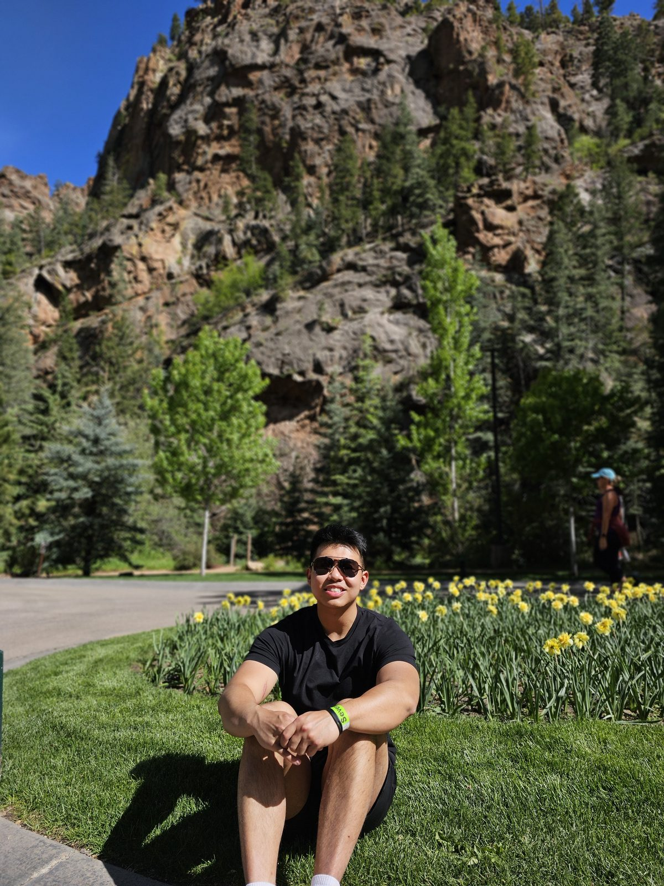
I grew up in Penang, went to college on a mountain in Georgia, spent a year in healthcare analytics in Chattanooga, then went back to Malaysia for my MBA at Putra Business School. These days I'm based between New Orleans and Penang.
I like work where the answer is hiding somewhere in the data and somebody has to go find it. I also like things that only reward you for showing up every day, which probably explains the drums, the gym, and the planted tanks.
I speak English, Mandarin, and Malay, plus basic Hokkien and Cantonese.
02Off the clock
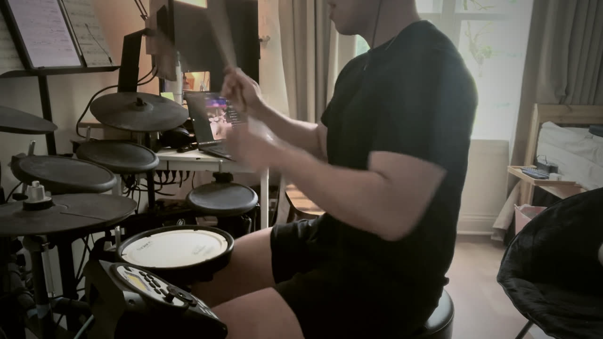
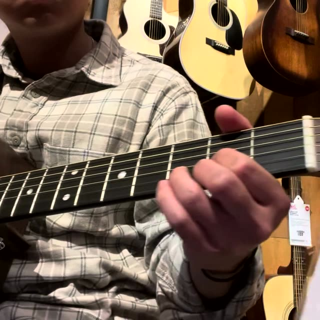
01 / Music
I've played drums for 16 years and hold Grade 8 from Rockschool. At Covenant I spent four years in the drum corps and played on the chapel worship team. On Sunday nights I led worship for my hall on guitar and cajon.
Guitar came later and it's quieter. Different discipline, same habit of coming back to it every day.

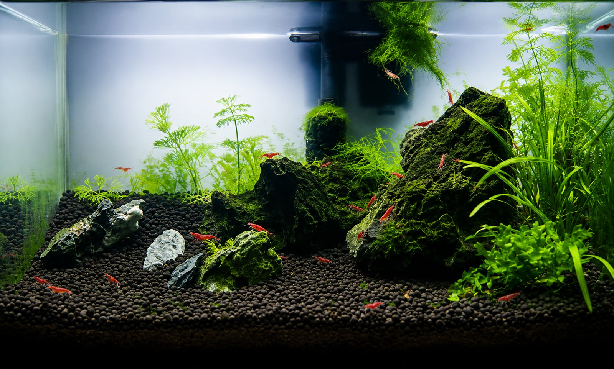
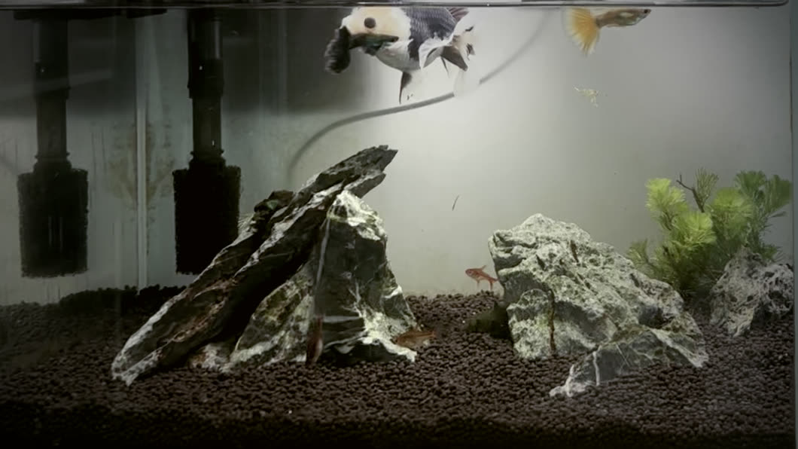

02 / Aquascaping
These are my tanks. A planted tank takes months to settle and about a day to wreck. I like that it punishes shortcuts. It's the same patience I need for a data model, except this one has fish in it.
My room is never without something growing in it. At Covenant I was president of the Growers Club.

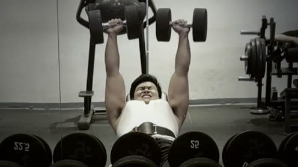
03 / Bodybuilding
Structured programming, tracked numbers, slow progress. It's the same loop as analytics, except I'm the dataset.
And no, I don't train in the morning.

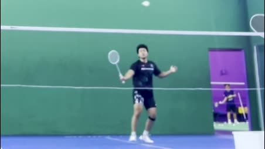
04 / Badminton
I coach at Chattanooga Badminton Club, handle its marketing, and have represented the state. At Covenant I co-founded the badminton club and served as vice president.

Sixteen years in
Keep scrolling ↓
03Life in frames
Keep scrolling →

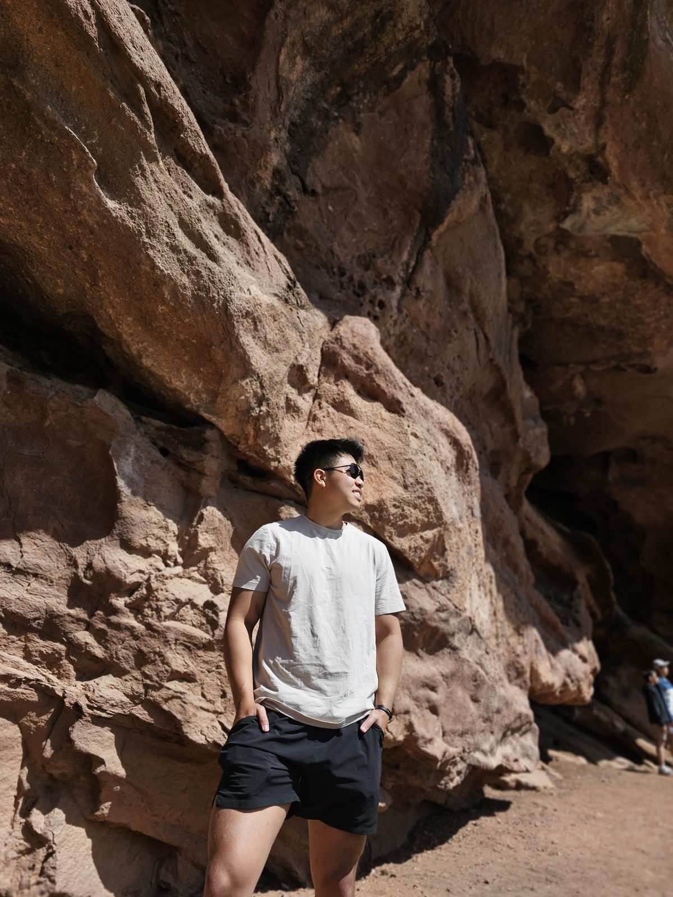


04Drum lessons
Opening soon
I taught drums in Penang before college and I want to do it again. Lessons aren't open yet. If you want to learn, or you want your kid to learn, tell me now and you'll be first on the list.
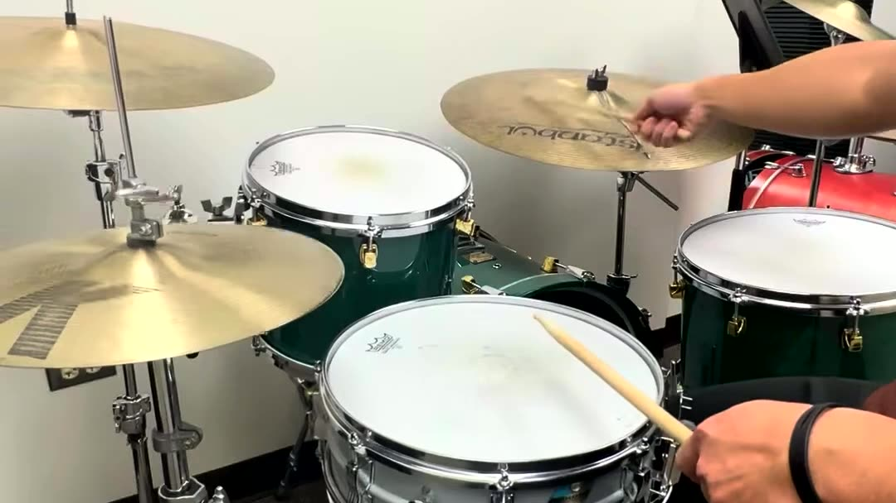
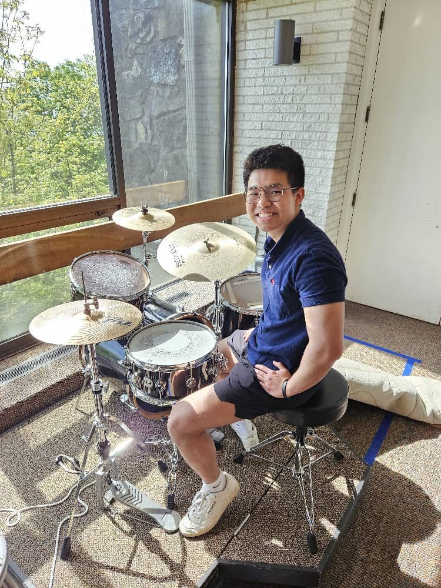
05By day
MBA | Business Systems Operations & Strategic Project Management
This site is about who I am off the clock. At work I optimise how a business runs and see strategy through to delivery. I look for the slow, manual parts of an operation and rebuild them so they hold up.
The full history, projects included, is on LinkedIn.
See my work on LinkedIn06Contact
Hiring, collaborating, or you just want to argue about snare tuning. All three work.
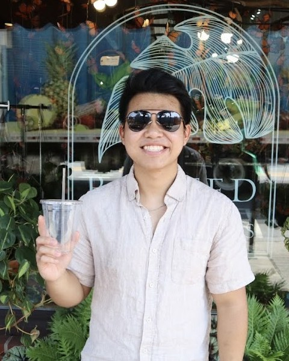